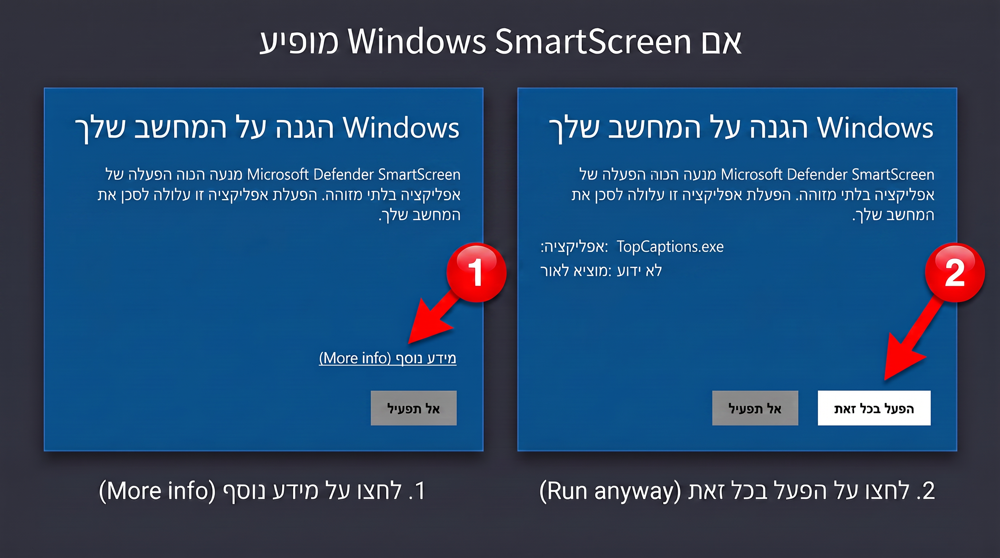

שלב 1: הורדת Top Captions
הורידו את קובץ ההתקנה למחשב Windows.
הורדת Top Captions ל־Windowsשם הקובץ שיורד:
TopCaptions.exeשלב 2: הורדת תוסף Top Captions
הורידו את קובץ הפלאגין והתקינו אותו באמצעות ה-ZXP Installer.
הורד TopCaptions.zxpYou are about to install Top Captions (1.0.0)
פתחו את הקובץ ולחצו על הכפתור המסומן בתמונה
=======שלב 2: פתיחת קובץ ההתקנה
בסיום ההורדה, פתחו את תיקיית ההורדות ולחצו פעמיים על הקובץ TopCaptions.exe.
המשיכו רק אם הורדתם את הקובץ מהקישור הרשמי של Top Captions ואתם מצפים להתקין אותו. אם שם האפליקציה או מקור הקובץ שונים, סגרו את החלון ואל תמשיכו.
>>>>>>> Stashed changes
שלב 3: הודעת Windows SmartScreen
ייתכן ש־Windows יציג הודעת הגנה. אם הקובץ הגיע מהקישור הרשמי ואתם מזהים אותו, לחצו תחילה על מידע נוסף (More info), ולאחר מכן על הפעל בכל זאת (Run anyway).

אל תלחצו על הפעל בכל זאת (Run anyway) עבור קובץ שלא הורדתם ממקור מהימן או שאינכם מזהים.
שלב 4: סיום ההתקנה
המשיכו בהוראות שמופיעות בחלון ההתקנה עד לסיום. אם Adobe After Effects או Adobe Premiere Pro כבר פתוחים, סגרו ופתחו אותם מחדש.
לאחר מכן תוכלו למצוא את Top Captions בתפריט:
Window → Extensions → Top Captions
ההתקנה הושלמה. אפשר להתחיל ליצור כתוביות בעברית.
חזרה לדף הבית